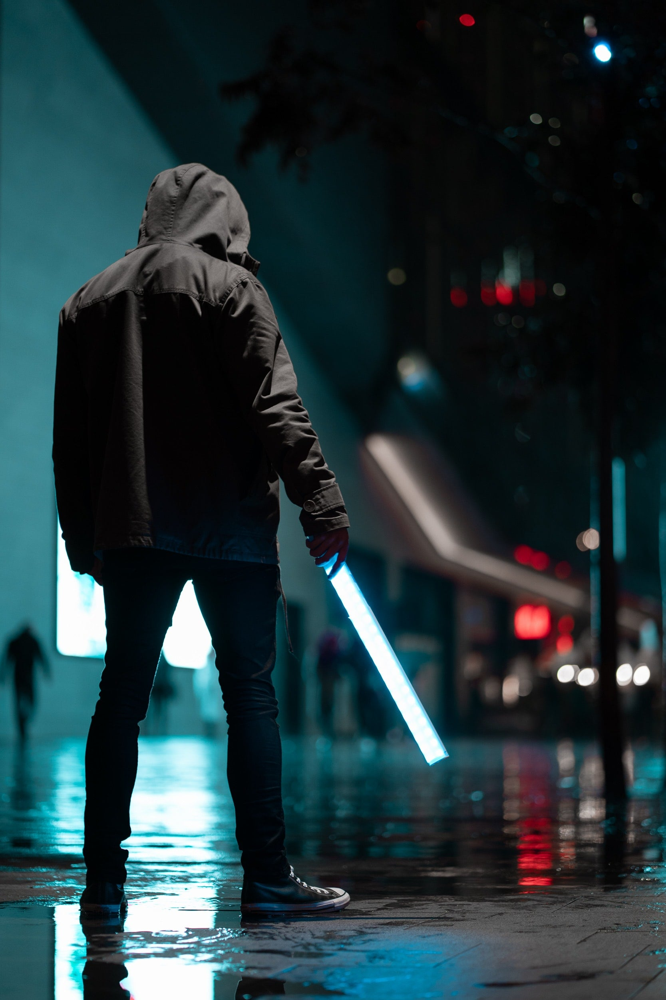

Antonio Bravo
Photographer currently residing in Calgary. I love getting to know people, learning their stories and being trusted to document their lives in photographs that will last a lifetime.
Gallery
PASSION
About me
My Journey
No one taught me anything, I didn't go to any photography school, I didn't attend any classes or courses. I just threw myself into deep water ... and I succeeded. Maybe it was because I always liked to take pictures, I always tried to make them as best as possible, or maybe because I did not give up only I was honing my photographic skills.
Work
Professional women's session is the right light, professional equipment, appropriate retouching, but also a unique atmosphere during photos thanks to which I try to bring out the beauty from women and at the same time make them feel comfortable. Unique photos are the result of hard work on the set. It is not only the staff, but also my individual help in choosing the right make-up, hair, styling to best emphasize the beauty of my models.
Customers
Women's session is primarily a souvenir for herself. I am convinced that every woman should have a professional photo session without postponing it or explaining that 'I could have done it a few years earlier, but I will do it in a while.' You have to do it here and now - it's your time to make your dreams come true.